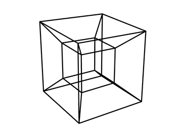
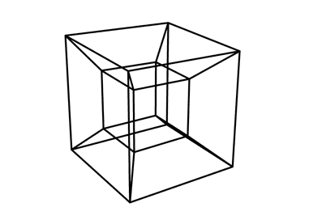

Flatland and Theological Expectations
I am going to confess at the outset that I have not read the novella Flatland: A Romance of Many Dimensions in its entirety.1 The central conceit of the book, however, has fascinated me since I first learned of it. While scholars read the original work as a satire of Victorian culture and its class system, the work has gained a renewed notoriety since Einstein’s general theory of relativity gained wide-spread understanding. In needing a mechanism to think more concretely about the fourth-dimension, many saw this book by Edwin Abbott as a witty imagining of how dimensionality must be understood by being that exist within a certain dimension. In the story, the protagonist, a square who lives in a two-dimensional world, visits a one-dimension world, only to be threatened and chased off after he attempts to convince the people there of the existence of a second dimension. Later, the square is then visited by a sphere, who transports the square to a three-dimensional world. While the specifics of the plot have their charm, the key point for my purposes today is the conceit and the general questions it raises:
- how are beings limited in their thinking by the world that they occupy?
- Can we think rationally about worlds with greater degrees of complexity (or “dimensions”) than our own?
- Insofar as we can think rationally about more complex worlds, what general expectations can we form about the nature and limits of our understanding of such things?
In particular, as the title suggests, I am interested in how thought experiments of this sort might elucidate certain features of theology. Without spoiling the fun too much too early, I think that we can draw a meaningful analogy between squares attempting to think about and understand spheres and humans attempting to think about and understand God. But, before we go too far down that path, I want to return to Flatland.
Thinking in Flatland
Imagine that you are a square. You are a two-dimensional object that lives in a two-dimensional world. All around you are circles, triangles, parallelograms, quadrilaterals of all kinds, and every imaginable form of polygon. You can see height and width, but you have no sense of depth. You are in Flatland. Now, I want you to observe these shapes and think about what you can glean from them:
There are four objects here. One is a simple square. Next we have a hectagon that is wider than it is tall, followed by another hectagon that is taller than it is wide. These two hectagons are fairly similar. The final object is also a hectagon, but is distinctly different from the first two. Like the second, it is tall, but like the first it has a pointed top. Unlike the second, however, it’s top and bottom angle are sharper. An intriguing collection of objects.
Now, I am going to tell you that these 4 images all represent the same object. So, and don’t forget that you are a square in Flatland, what do we do this piece of information? Would this not be as perposterous as saying that Mr. Triangle (△) is actually the same as Miss Diamond (◇) or Sir Circle (○)? Maybe, maybe, you could say that the second and third images represent the same object; Mr. Hectagon has simply decided to lie down for a nap. But all four? Three of these images have 6 sides and one has 4. This simply cannot be. What object could possibly be represented by these four images?
Some of you may very well have a sense of the answer, but assuredly our poor Square does not. Not yet. So, let’s give him a helping hand and add a bit more detail:
Here are our four images with their foremost lines visible. At this point, the object is starting to come into focus. We are looking at various orientations of a cube as represented in two-dimensions. Imagine trying to explain a cube to Mr. Square. Imagine trying to not just convince him that the original four images are all the same object, but to help him understand what that object is.
While I hope that this small thought experiment starts to suggest the difficulty of thinking about greater orders of complexity than that within which we actually live, I also understand that all of us actually live in a three-dimensional world, and so we fundamentally can’t imagine being lowly squares. We can see those four images and fairly easily the single cube that each represents. We can imagine that cube and spin it in our mind’s eye into the four orientations pictured. In short, we are likely to undervalue how difficult a task poor Mr. Square has in understand this cube. So, to try and bring the point to bear with more clarity, I offer you those two aminated images:
 

These images are attempts at rendering a tesseract, which is to a cube what a cube is to a square; it is the four-dimensional equivalent of a cube. I want you to study these animations, try to understand this object, try to picture it in your mind. If you follow a particular line in one of the animations, you will see at some point that it does something impossible; it crosses from behind to infront of another line.
This is the central truth. Whether a square trying to understand a cube or a human trying to understand a tesseract, when something tries to reason about an object that exists in a greater degree of complexity, paradoxes will start to appear. One object has both 4 sides and 6 sides; one line is both behind and infront of another.
Thinking about God
Theology is, in essential form, nothing more than thinking about God. And, as I said at the beginning, I think we can draw a meaningful analogy between a square trying to think about a cube (or a cube trying to think about a tesseract) and humans theologizing about God. God is—metaphysically, existentially, definitionally—more complex than us humans. He is the Creator, we are created; He is beyond space and time, we are within it.
So, given the examples above, what might we expect about the outcomes of theology? And note that I am being purposely very broad here. I am thinking of theology of any sort. We are trying to think about the nature and limits of thinking about God in general. Given the nature of God and nature of humans, what might be general characteristics of theology that we can expect? I consider this kind of meta-question similar in efficacy to the sorts of approximations we make when doing arithmetic. While I can’t determine the product of 17 and 24 immediately, I can know that the answer will be around 400 (20 × 20). Knowing this can help me to avoid settling on a wrong answer, but cannot help me to determine the right answer. It is a heuristic, not a formula. Likewise, considering how our very natures and realities impinge upon our thinking can help us develop a theological heuristic that shows us certain types of theological conclusions are clearly false, even if it cannot show us that any particular theological claim is clearly true.
God, within the minds of humans, is a paradox, must be a paradox. This does not mean that we are incapable of thinking meaningful thoughts about God, nor does it mean that we cannot say some predicates are false of God. It does, however, impose a much stronger limit to the things we can say of God. Although, from a different perspective, it also opens up much that we can say of God. For many predicates, God is both X and not-X. Be wary of people peddling propositions that God is only some X. Likewise, be wary of people suggesting God is everything, that there is nothing stable that we can think about or interact with. Like the tesseract, God has real qualities, there are things that are true of God and things that aren’t. But, like the tesseract, when we put our minds to God, there is much that fuzzes and distorts our minds. God is the cube; we, the square.
-
If you wish to peruse it, Project Gutenberg has a free HTML version. ↩